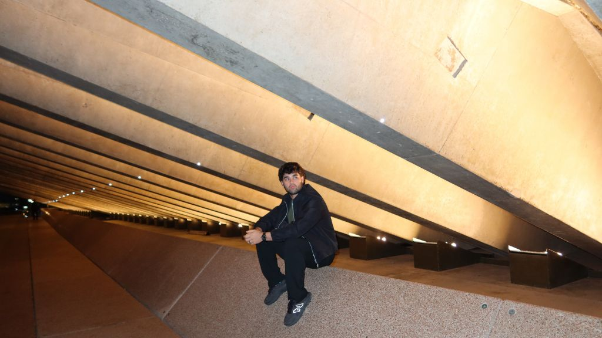

Makanduk's 'Ruined' Translates Club Sound into Cinematic Fantasy

The following feature is now included in our online magazine which is also available in print.
Issue #4
Online Magazine | Print MagazineFor more details contact us at: volechomag@gmail.com
Makanduk, the Sydney-born self-taught producer, is a standout talent who makes a laptop and bits of gear bigger than the room it sprang from. His new EP, Ruined, released October 10, 2025, is a trim, driving declaration that weaves club sound with sci-fi texture and the desolate feeling of a middle-of-the-night drive along a city that doesn't even exist.
Makanduk's sound exists in just the right spot between beat and atmosphere. He's plainly borrowed from producers like Chris Lake and Chris Stussy, but where his sound succeeds is in its sense of film. There's groove, there's sweat, but there's story too. The three songs that constitute Ruined—specifically the trance-nation Crazy and low-slung bruiser Reason—sound like scenes in a hitech-colored film, half action and half suspense. You can almost envision the strobe light and fog machines, that sort of fog where time crawls just so the drop strikes all the more forcefully.
Where the production is sleek and about to drop at the club, there is something beating like nostalgia coursing through it. Makanduk resides in between Sydney and Germany, and that bite of cultural duality creeps in big and small ways. There's the precision and order of Berlin electronic music and the open-road, sun-kissed sound of Sydney. It pops up in transitions, where minimalist cool clashes with warm melody, or how he allows basslines to wander like characters and not rhythms.
What's admirable about Ruined is how well it works considering that it was born in a home studio. There's no feeling of being restrained here. Rather, the lo-fi equipment lends the EP its edge, a raw intensity that sheen production compromises. Each hi-hat crack is sharp, each build measured. It's the sound of an artist who learned that emotion is greater than gear.
Tracks like Crazy are set for underground club dance floors but also sustain themselves during a night-walk listened to through the headphones. It's a balancing act difficult to achieve—club music that can also be a solo activity. You hear it on albums like Fred again.'s Actual Life, or in the dramatic tension of Trentemøller's The Last Resort. There's intensity, but there's also considered thought. A physical and affective groove.
Reason, another jewel, is heavier with a gritty bass line that pretty much demands a bass face. It's a testament to Makanduk being no mere coloring with atmosphere but building tension and release in good faith. There's a hint of that early 2010s vibe—think Deadmau5 or Eric Prydz—refracted through a contemporary lens, cut to the bone and fueled by feel.
You can tell that Ruined is more than a name—it's a theme. The songs sound like the soundtrack to burning to the ground in progress, to elegance in things deteriorating over time. It's dance music that seeks to capture the ridiculousness of seeing a city burn in the club. Destructive, but cleansing. Like sweating out tears of sorrow in strobing lights.
It's refreshing to see a producer getting enthusiastic about fantasy in a scene which often fetishizes over templates and trends. Makanduk talks about writing his music as he would write "sci-fi and action movie scenarios," and that's precisely how it sounds. You can put these tracks into something like Blade Runner 2049 or Drive and they'd fit right in. They have that mix of pulse and emotion, the feeling that something’s about to happen.
Follow Our Playlist For More Music!
This dispatch was last updated on October 14, 2025